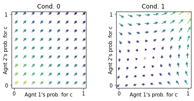

from MARLDynamics.Environments.EcologicalPublicGood import EcologicalPublicGood
from MARLDynamics.Agents.StrategyActorCritic import stratAC
from MARLDynamics.Utils import FlowPlot as fp
import numpy as npEcological Public Good
Class for ecological public good environment
The environment was introduced in
Barfuss, W., Donges, J. F., Vasconcelos, V. V., Kurths, J., & Levin, S. A. (2020). Caring for the future can turn tragedy into comedy for long-term collective action under risk of collapse. Proceedings of the National Academy of Sciences, 117(23), 12915-12922.
Example
env = EcologicalPublicGood(N=2, f=1.2, c=5, m=-4, qc=0.2, qr=0.1, degraded_choice=True)
envEcologicalPublicGood_2_1.2_5_-4_0.2_0.1_DegChoiIn the prosperous state, the rewards are a tragedy Prisoners’ Dilemma.
env.R[0,1,:,:,1], env.R[1,1,:,:,1](array([[ 1., -2.],
[ 3., 0.]]),
array([[ 1., 3.],
[-2., 0.]]))Yet, because of the possible collapse and the agents’ future outlook, the overall regime is one of coordination.
# Init enviornment and MultiAgentEnvironment-interface
mae = stratAC(env=env, learning_rates=0.1, discount_factors=0.9)
x = ([0], [0,1], [0]) # Plotting only the prosperous state
y = ([1], [0,1], [0]) # Plotting only the prosperous state
ax = fp.plot_strategy_flow(mae, x, y, flowarrow_points = np.linspace(0.01 ,0.99, 9), NrRandom=16)
Implementation
EcologicalPublicGood
EcologicalPublicGood (N:int, f:Union[float,Iterable], c:Union[float,Iterable], m:Union[float,Iterable], qc:Union[float,Iterable], qr:Union[float,Iterable], degraded_choice=False)
Ecological Public Good Environment.
| Type | Default | Details | |
|---|---|---|---|
| N | int | number of agents | |
| f | typing.Union[float, typing.Iterable] | public goods synergy factor | |
| c | typing.Union[float, typing.Iterable] | cost of cooperation | |
| m | typing.Union[float, typing.Iterable] | collapse impact | |
| qc | typing.Union[float, typing.Iterable] | collapse leverage/timescale | |
| qr | typing.Union[float, typing.Iterable] | recovery leverage/timescale | |
| degraded_choice | bool | False | whether agents have a choice at the degraded state |
EcologicalPublicGood.actions
EcologicalPublicGood.actions ()
The action sets
EcologicalPublicGood.states
EcologicalPublicGood.states ()
The states set
EcologicalPublicGood.TransitionTensor
EcologicalPublicGood.TransitionTensor ()
Get the Transition Tensor.
The TransitionTensor is obtained with the help of the _transition_probability method.
EcologicalPublicGood._transition_probability
EcologicalPublicGood._transition_probability (s:int, jA:Iterable, s_:int)
Returns the transition probability for current state s, joint action jA, and next state s_.
| Type | Details | |
|---|---|---|
| s | int | the state index |
| jA | typing.Iterable | indices for joint actions |
| s_ | int | the next-state index |
| Returns | float | transition probability |
EcologicalPublicGood.RewardTensor
EcologicalPublicGood.RewardTensor ()
Get the Reward Tensor R[i,s,a1,…,aN,s’].
The RewardTensor is obtained with the help of the _reward method.
EcologicalPublicGood._reward
EcologicalPublicGood._reward (i:int, s:int, jA:Iterable, s_:int)
Returns the reward value for agent i in current state s, under joint action jA, when transitioning to next state s_.
| Type | Details | |
|---|---|---|
| i | int | the agent index |
| s | int | the state index |
| jA | typing.Iterable | indices for joint actions |
| s_ | int | the next-state index |
| Returns | float | reward value |
EcologicalPublicGood.id
EcologicalPublicGood.id ()
Returns id string of environment